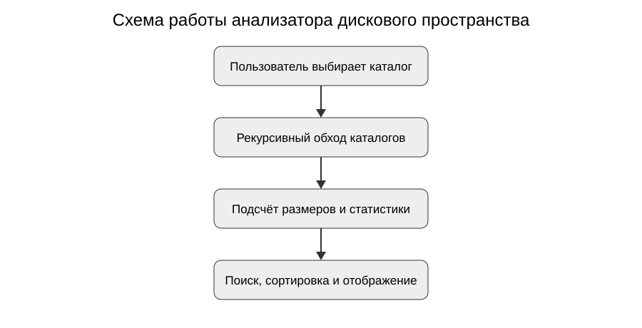

Назначение
DiskAnalyzer — настольное приложение на C# и WPF (.NET Framework), предназначенное для анализа дискового пространства и поиска крупных файлов и каталогов.
Основные возможности
- рекурсивное и нерекурсивное сканирование;
- расчёт размеров файлов и каталогов;
- поиск и фильтрация;
- сортировка по размеру, типу, имени и пути;
- постраничное отображение результатов;
- обработка недоступных объектов;
- открытие объектов в Проводнике;
- визуализация крупнейших объектов.
Схема работы

Скриншоты


Видеодемонстрация
Технологии
C#, WPF, .NET Framework, файловая система Windows, асинхронные операции.